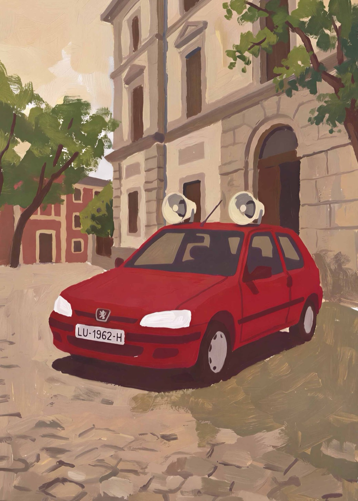

Non renunciamos a ti,
renunciamos á túa ausencia
Escolma de artigos de Hernán Naval Parapar - 1983–2000
O LIBRO
Un volve ler os textos de Hernán Naval e semella escoitalo de novo: golpeando as teclas da súa Olivetti, apurando un Ducados ou compartindo unha conversa entre as columnas da Casa do Mar.
A súa escrita combina o rigor intelectual coa retranca, a curiosidade coa provocación e unha fonda paixón polo seu tempo e polo seu país. Esta escolma reúne preto de corenta textos escritos entre 1983 e o ano 2000, unha mostra da súa obra e do seu compromiso coa lingua, a cultura e a sociedade galegas.
Vinte e cinco anos despois do seu pasamento, recuperar o pensamento de Hernán é reencontrarse cunha voz libre, lúcida e incómoda. Unha voz que, lonxe de quedar atrás, segue a interpelarnos.

QUEN FOI
Hernán Naval Parapar
Viveiro, 1962 — Ribadeo, 2001
Músico, mestre, pedagogo, escritor, compositor e tecedor de iniciativas sociais, políticas e culturais tanto no seu Viveiro natal coma no Ribadeo que lle deu acubillo.
Formado en linguaxe musical e trompeta, a súa batuta dirixiu a coral do CIT de San Cibrao (1987–1989) e máis a Banda Municipal de Ribadeo (1992–2001), á que levou á condición de banda sinfónica. En 1990 comezou a formar músicos. Foi tamén alma máter do nacemento e a consolidación da Escola Municipal de Música e Danza de Ribadeo (1993), que dirixiu ata o seu pasamento.
Militante do Bloque Nacionalista Galego e das agrupacións culturais Sementeira, en Viveiro, e Francisco Lanza, en Ribadeo, Hernán Naval foi un artivista: unha persoa que entendeu a arte coma unha ferramenta para remover conciencias e promover cambios políticos e sociais na Galiza dos anos 80 e 90.
EDICIÓN
- Editan
- EOditorial e Agrupación Cultural Francisco Lanza
- Selección e edición
- Dores Fernández, Suso López e Francisco Luís Rodríguez
- Limiar
- Suso López
- Corrección lingüística
- Dores Fernández, Farruco Graña e Antonio Gregorio
- Deseño e maquetación
- Irmáns López, Marigel e Chenchu
- Dimensións
- 17 × 24 cm
- Peso
- 450 g aprox.
- ISBN
- 979-13-992210-9-1
- Depósito legal
- LU 302-2026